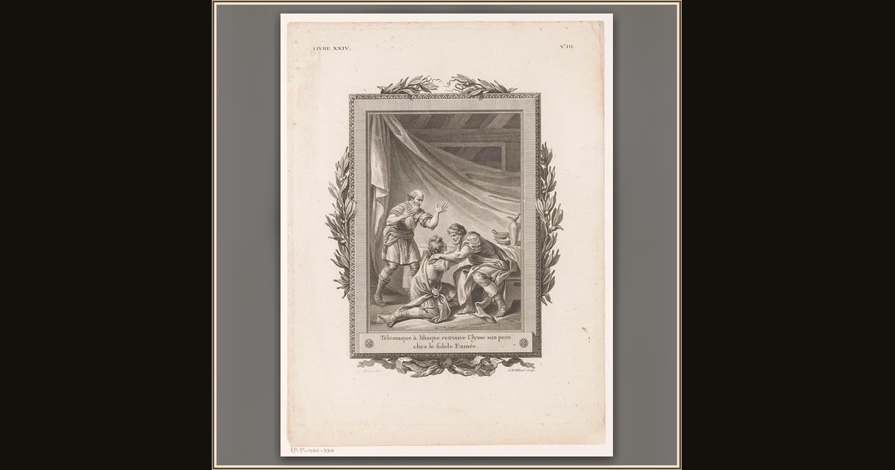

Telemachus and Odysseus Reunited on Ithaca
Jean-Baptiste Tilliard, after Charles Monnet · 1785 · Rijksmuseum · Amsterdam, Netherlands
As Odysseus finally reveals himself, Telemachus throws his arms around the father he has never really known, and the two weep together. The Rijksmuseum catalogs this 1785 engraving as an illustration to Fénelon’s Télémaque, but the scene it pictures — the tear